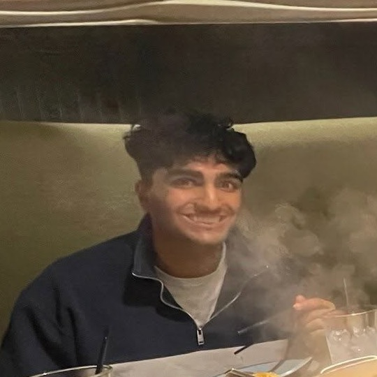
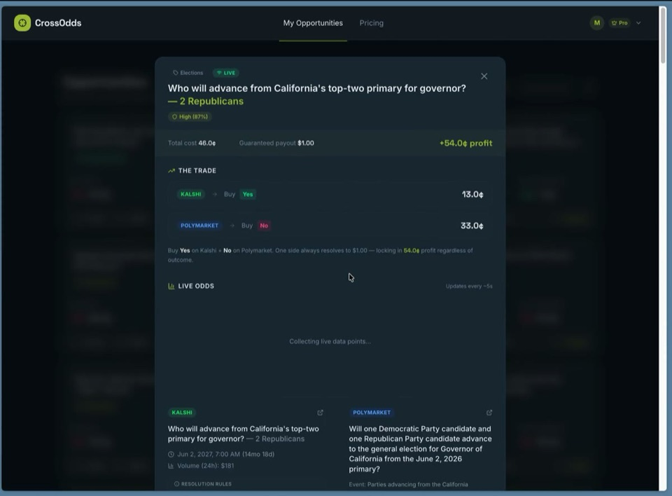
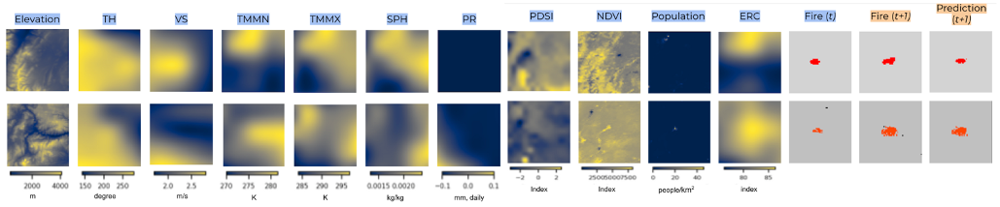
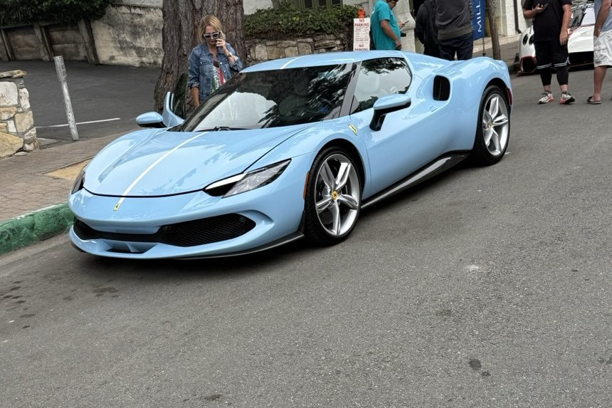
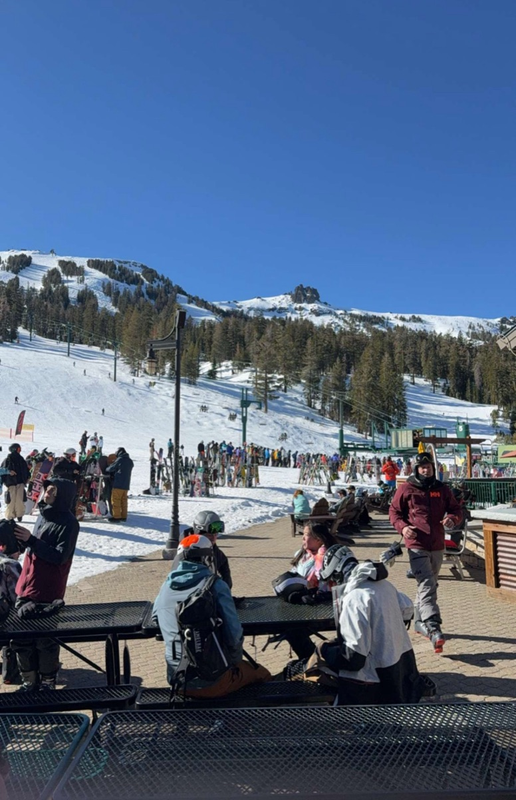
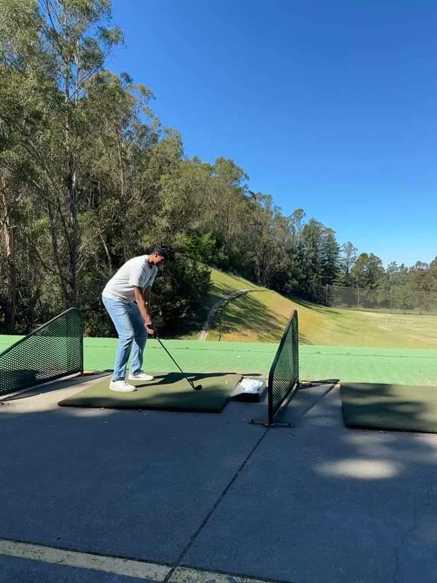
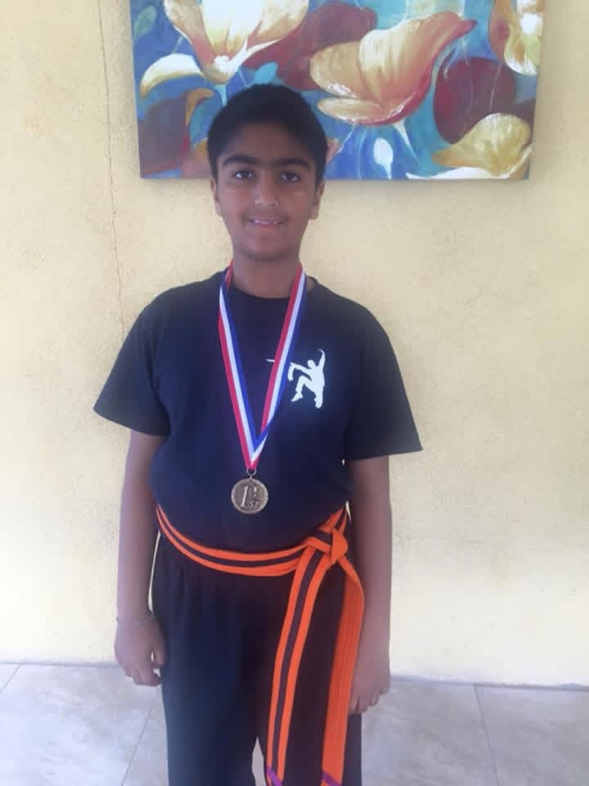

I’m a 3rd year undergraduate EECS & Business student through the Management, Entrepreneurship & Technology program at UC Berkeley.
I am broadly interested in machine learning and my current research interests lie in continual learning. I’ve previously interned at NASA, Visa and Intel broadly building and researching application-specific deep learning models and agents. In my free time, I love to watch F1 and football, learn to play golf and watch car reels.
Above: The F1 car above is driven by a small neural network that trains by imitation learning (DAgger) in your browser, with a physics-based controller as the teacher. Each tab is a replica of a real F1 circuit so you can see the car take on different obstacles as you learn more about me. You can also race the current checkpoint of the model, or switch the graphics to ASCII.
-
Roboball
2026Real-time ROS2 perception-and-control system driving a UR7e arm to track and repeatedly bounce a ball, from camera calibration and ball detection to trajectory prediction and PID control over MoveIt IK.
-

-

More on GitHub.
-

Undergraduate Researcher · Berkeley Artificial Intelligence Research (BAIR)
Berkeley Speech Group – Working on continual learning research.
-

Contract Machine Learning Engineer · AWS
Annapurna Labs – Developing an RL framework to train LLM agents for RTL debugging and optimization.

Software Engineering Intern · Visa
Embedded Payments Platform – Built a deep learning based forecasting service for vendor payments.

Applied AI/ML Intern · Intel
Data Center & AI Group – Designed agentic workflows for IP development and formal verification.

ML Engineering Intern · NASA
Data Sciences Group – Developed explainable ML techniques for exoplanet detection in Kepler and TESS signals.
NASA Science · NASA AI Model That Found 370 Exoplanets Now Digs Into TESS Data

Student Researcher · San José State University
Xuanhong An Group – Researched adjoint-based optimization for CFD simulations of fish-like swimming.
APS DFD 2023 · Swimming Fast Versus Swimming Efficiently
ML Engineering Intern · NASA
Data Sciences Group – Trained deep learning models for cosmic ray detection for the James Webb Space Telescope.
2024 NASA Ames Center Innovation Fund (CIF) Grant · Fast and Accurate Detection of Cosmic Ray Contamination in JWST Data

Student Researcher · Stanford University
Farhat Research Group – Designed CFD meshes for optimizing airfoil designs.
Center for Turbulence Research – Wrote CFD optimization code for nozzle flow in propulsion engines.
You can often find me doing or watching one of these in my free time.
-

Formula 1
I’m a huge F1 fan and I try to watch every race I can. I’m currently a Carlos Sainz fan but it can change day-to-day based on the press conferences :)
-

Cars
Aspiring car enthusiast. My favorite car is probably a baby blue LaFerrari. This one is from Monterey Car Week 2025.
-

Skiing
Still learning, but I made it down my first black diamond in January 2026 in one piece. Slowly but surely getting better.
-

Golf
I’m learning how to play golf and try my best to get out to Tilden, here in Berkeley, on weekends.
-

Karate
Trained for 10 years and taught for over 6. Had a lot of fun and I miss it, so I still try to practice at home sometimes.
The fastest route is email. I reply to most things within a day.